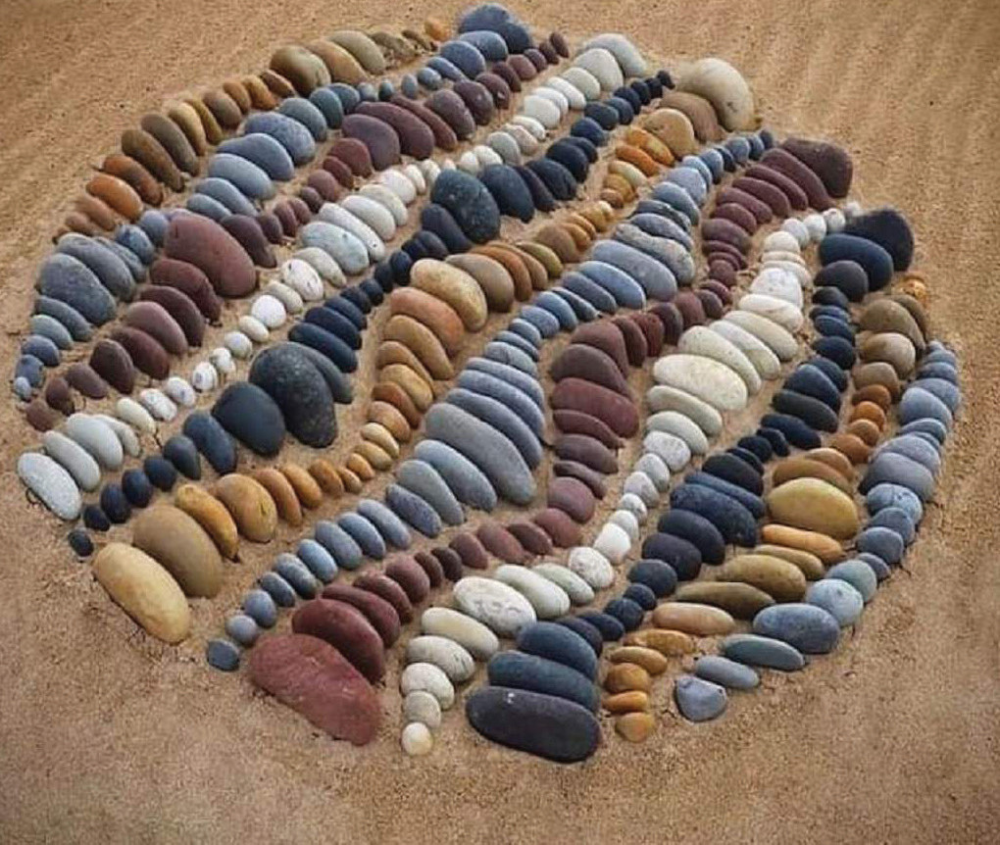
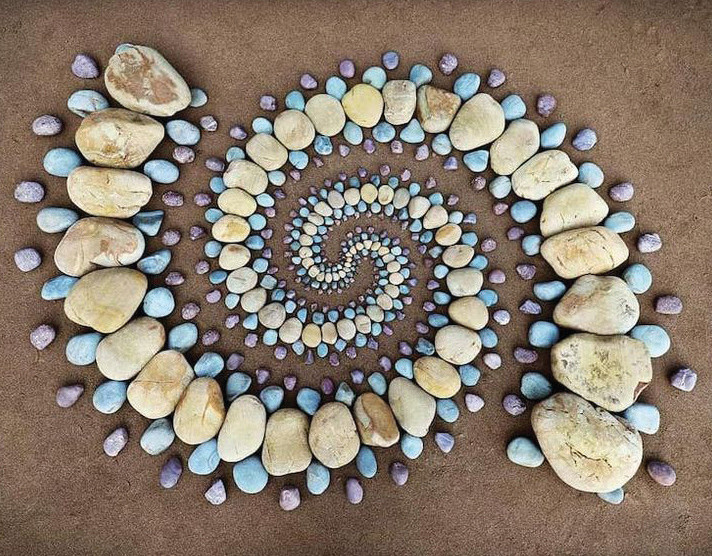
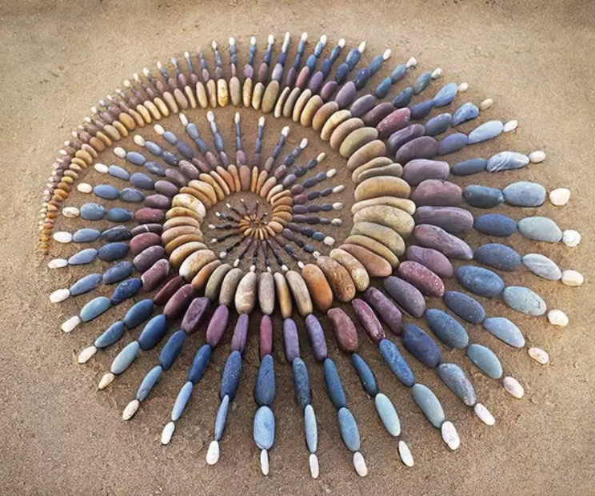
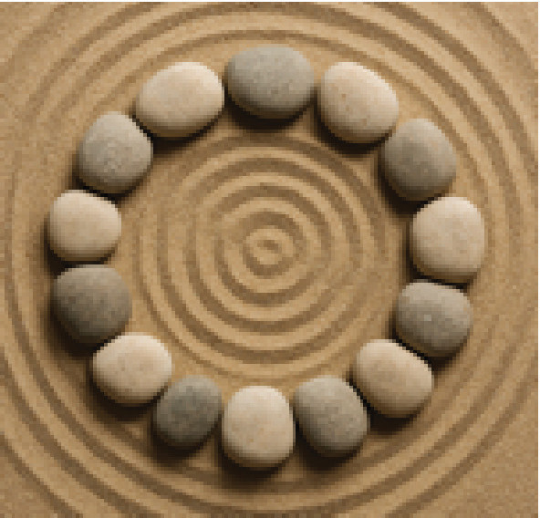

(b) Look at the following pictures of stone and sand art.Then, listen to the instructions for creating them.
Picture 1

Picture 2

Picture 3

Picture 4

(b) Look at the following pictures of stone and sand art.Then, listen to the instructions for creating them.

Picture 2

Picture 3

